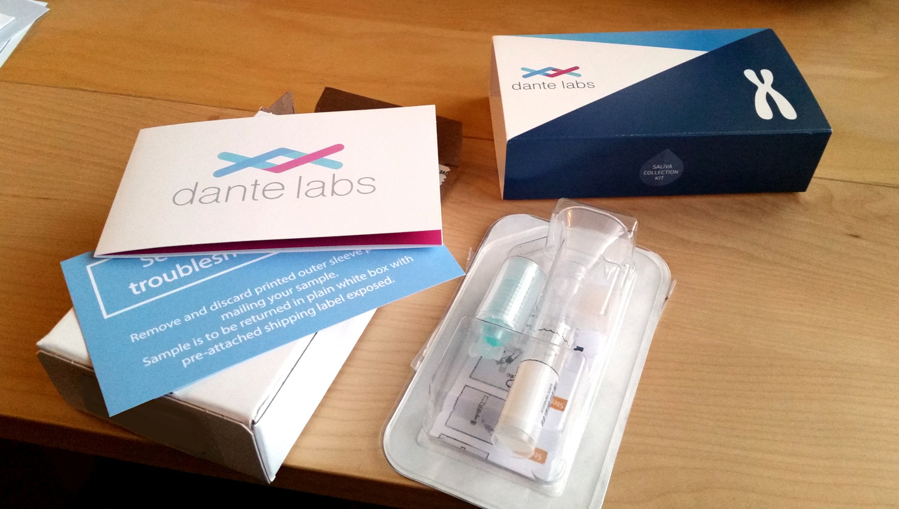

My Experience with Whole Genome Sequencing
Sun, 17 May 2020
Free-Form
So, I decided to have my genome sequenced.
I had been eyeing the WGS (whole genome sequencing) offering by Veritas Genetics for most of last year. To be honest, I was waiting to see if they were going to have another Black Friday sale. They didn't. Not only that, they proceeded to cease operations in the US some short weeks later. If I am anything like their other potential customers, perhaps these two events are somehow related.
As the saying goes: "back to the drawing board."
Next, I stumbled upon another company offering WGS, this time a lab outside the US. Dante Labs is another direct-to-consumer genomics company based in central Italy. In an attempt to learn from my past failure, I decided to strike, temperature of the iron be darned, lest I miss my opportunity again. I placed my order in early February.
As we all know the unthinkable happened: the coronavirus pandemic struck.
It was midway through February and my saliva sample was midway through its arduous journey across the Atlantic in a pre-paid USPS box when Italy instated its country-wide lockdown. At this point I was convinced the fates were conspiring against me, pulling out all the stops, lest I obtain the secrets hidden within my own genetic code.

My Kit from Dante Labs
First a company bankruptcy, then a global pandemic; the stakes appeared to be escalating quickly. I feared what might befall the planet if I attempted to circumvent fate and place an order at one of the few remaining direct-to-consumer WGS labs.
I decided to wait.
Sometime after abandoning all hope of seeing a single nucleobase of my own DNA, I received an email from Dante Labs informing me that my results were available online. They had managed to deliver my results ahead of schedule against all the odds! I must admit I felt grateful and more than a little guilty about the whole thing.
One of the reasons I chose Dante Labs is that they provide access to the raw sequencing data. I used the links on their online portal to download my FASTQ, BAM, and VCF files.
It is, obviously, an enormous amount of data to sift through. I started by attempting to verify a few things:
- The data is from an individual with a Y chromosome
- The VCF data appears to match the BAM file
- The BAM file contains a somewhat obscure genetic variant that I knew I had prior to performing sequencing
- The data likely comes from a Caucasian
I must say I was more than a little skeptical at first. However, the above is evidence enough for me. I must say, it really was an eerie experience coming to the realization: "
by golly, these 67.2 gigabytes of As, Cs, Ts, and Gs belong to me." The very code that makes me the loathsome wretch that I am.
Thank you, Dante Labs. Thank you and stay safe!